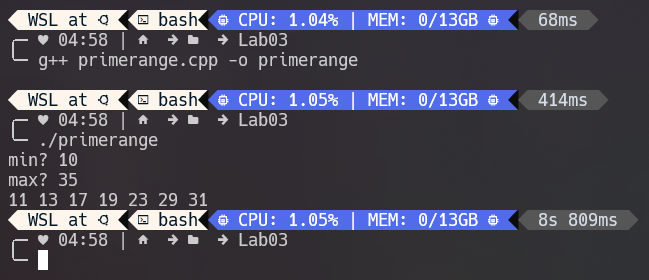
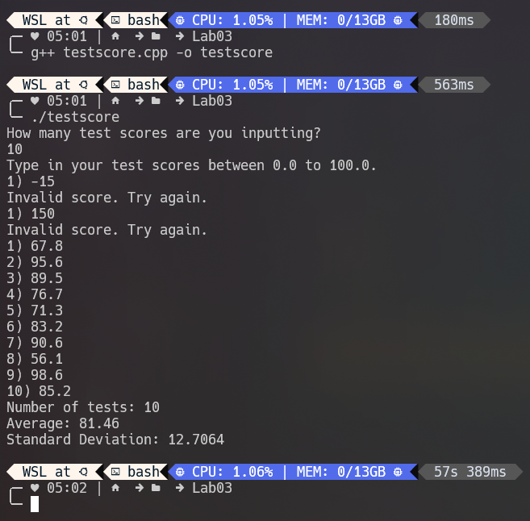
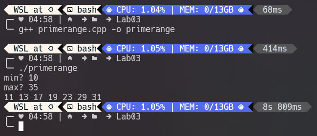
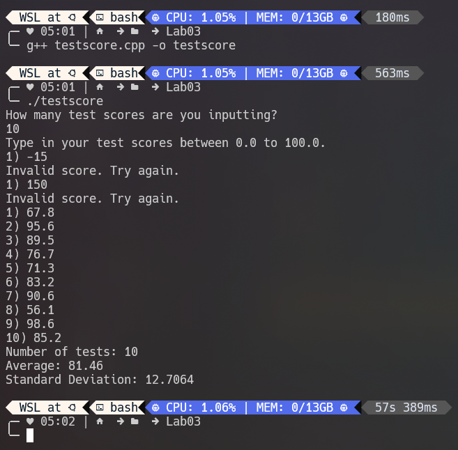

Lab 03: Control Flow with if-else and Loops (Due 9/26 BEFORE lecture)¶
Due: Mon Sep 26, 2022 5:30pm¶
Ungraded, 45 Possible Points¶
California State University, San Bernardino¶
School of Computer Science & Engineering¶
CSE 2010 Fall 2022¶
LAB 3: if/else statements, loops (45 points)¶
Due: 5:30pm, Monday September 26 on Canvas¶
Lab 3 will consist of several programming exercises to help enforce your understanding of if-else statements,
relational operators, and boolean expressions, and loops.
Log into a workstation and navigate to your Lab3 directory. You should create all your files in this directory.
Remember to use the g++ command to compile your programs:
Example:
g++ Ex1.cpp -o Ex1
Then, to run your program:
./Ex1
Put your name in a block comment at the beginning of every exercise, followed by the file name, date, and a brief description of what the program does.
Remember to include comments in your code. Source code with no comments will get no credit.
Take screenshot(s) of all of the runs specified for each exercise.
Exercise 1 (5 points):¶
Write a C++ program that prompts the user to enter a number between 3 and 12, inclusive. If the user enters a number inside [3, 12], the program displays "good number", otherwise the program displays "bad number". If the number entered is a good number, the program will then output whether it is an even number or an odd number.
Hint: use if-else statements and the modulo operator (%).
Run with 4 different numbers: A number less than 3, an even number in the range, an odd number in the range, and a number greater than 12 (a total of 4 runs)
Exercise 2 (7 points):¶
Write a C++ program to simulate a simple calculator to add, subtract, multiple, or divide two operands that the user provides.
First prompt the user for the arithmetic operator they want to use (+,-,*,/). If they enter any other operator, display an error message.
If they enter a valid operator, prompt the user for two operands.
Finally, depending on the user input display a message that follows the following format:
op1 (operator) op2 = solution
- If the user selects to use the /(division) operator, and the second operand is 0 (zero), do not do the operation and display an error message.
Examples of runs:
Enter operator: +, -, *, /: +
Enter two operands: 2.5 3.5
2.5 + 3.5 = 6.0
Enter operator: +, -, *, /: / Enter two operands: 4 0 Sorry, we’re not allowed to divide by zero.
Run with each operator, an invalid operator, and once where the second operand is zero (a total of 6 runs).
Exercise 3 (8 points):¶
Write a C++ program that implements a “Guess-the-Number” game. First call the rand() function to get a
random number between 1 and 15 (I will post a pdf about rand() on Canvas). The program then enters a loop
that starts by printing "Guess a number between 1 and 15:". After printing this, it reads the user response.
(Use cin >> n to read the user response.) If the user enters a value less than the random number, the program
prints "Too low" and continues the loop. If the user enters a number larger than the random number, the
program prints "Too high" and continues the loop. If the user guesses the random number, the program
prints "You got!", and then prints: how many times the user guessed too high, how many times the user
guessed too low, and the total number of guesses. You will have to keep track of how many times the user
guesses.
Run once (Make sure the number of guesses that is printed matches the number of guesses made)
Exercise 4 (10 points):¶
Write a C++ program that prompts the user for a starting point and an ending point, then print out all of the prime numbers within the starting point and ending point.
For example, when the user enters 10 for their starting point and 35 for their ending point, the program should print:
The prime numbers between 10 and 35 are: 11 13 17 19 23 29
Run once with the above example**
Exercise 5 (15 points):¶
Write a C++ program that reads in a set of test score data from the user. (Test scores should be entered
in decimal form to represent the percentage grade). Your program should only accept test scores
between 0.0-100.0 (we will assume no extra credit is possible). Once the user has finished entering the
test scores, print out the number of tests entered, the average of the tests, and the standard deviation.
Use the following formula (Welford’s method) to calculate the standard deviation:
\(\(S=\sqrt{\frac{\sum{x^2_i}-\frac{1}{n}\left(\sum{x_i}\right)^2}{n}}\)\)¶
You can compute this quantity by keeping track of the count (number of tests), the sum, and the sum of
squares as you process the input values.
Note: Although there are other ways to calculate the standard deviation, please use this method. This
method is used since it only requires one pass of the data. Do not use arrays or vectors.
Run your program once using the following data (but your program should work for any data set):
| Test Score | |
|---|---|
| 1 | 67.8 |
| 2 | 95.6 |
| 3 | 89.5 |
| 4 | 76.7 |
| 5 | 71.3 |
| 6 | 83.2 |
| 7 | 90.6 |
| 8 | 56.1 |
| 9 | 98.6 |
| 10 | 85.2 |
| Number of Scores | 10 |
| Average | 81.46 |
| Std. Deviation | 12.71 |
After you have completed all 5 programming exercises, take screenshots showing the error-free compilation and test runs of all of the exercises. Submit all 5 .cpp source code files with their corresponding screenshots to Canvas by 5:30pm on Monday September 26.
Your submission for Lab 3 should include the following:
- .cpp file for Exercise 1
- Screenshot(s) for Exercise 1
- .cpp file for Exercise 2
- Screenshot(s) for Exercise 2
- .cpp file for Exercise 3
- Screenshot(s) for Exercise 3
- .cpp file for Exercise 4
- Screenshot(s) for Exercise 4
- .cpp file for Exercise 5
- Screenshot(s) for Exercise 5
/Week 4/Lab 3/Exercise1.png)
/Week 4/Lab 3/Exercise2.png)
/Week 4/Lab 3/Exercise3.png) 


